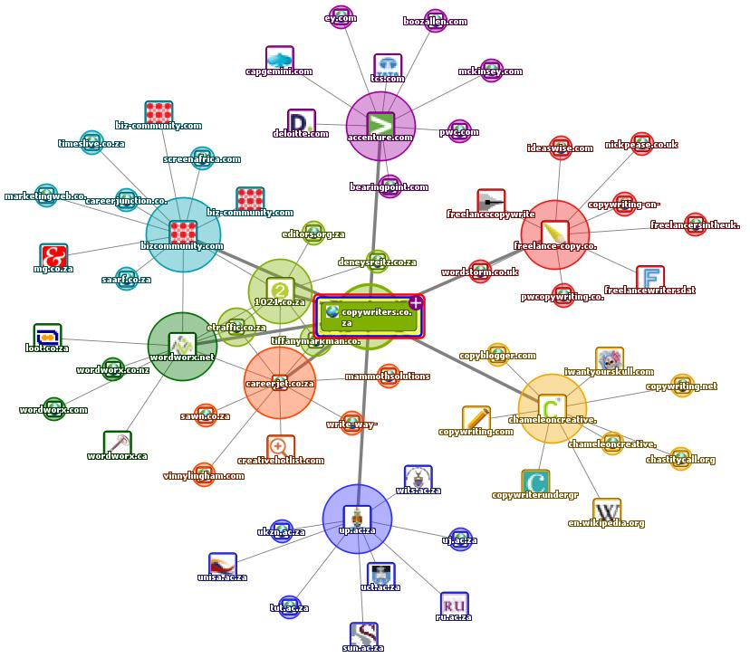
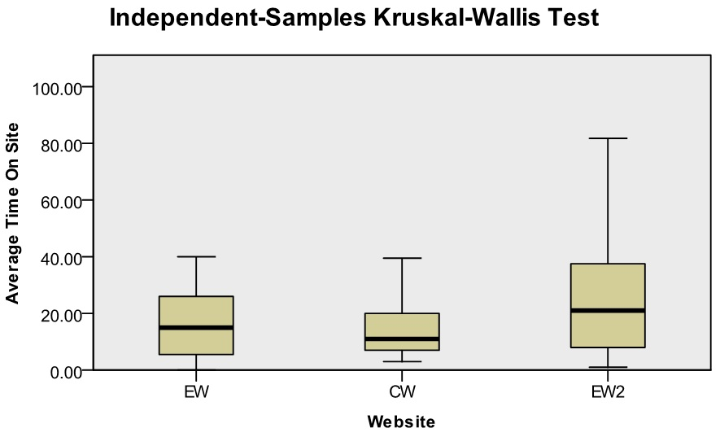
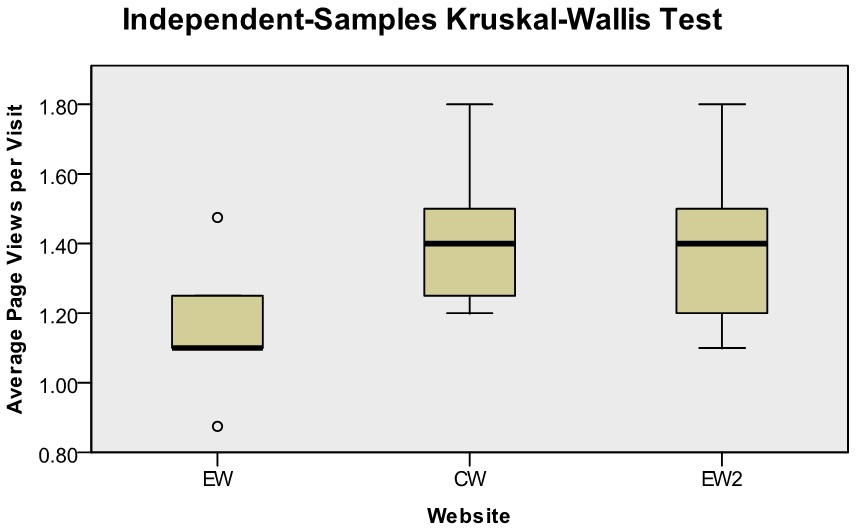
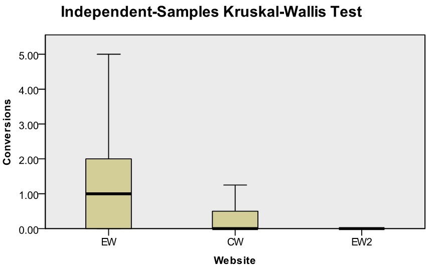

Since the third millennium B.C., the human race has been attempting to perfect the process of storing and retrieving relevant information (Weideman and Str?mpfer 2004). As technology evolved, tools (clay tablets) were replaced by machines (manual indexation) and subsequently by automation (artificial intelligence). Automation technology needed to overcome two challenges: speed and relevancy. Search engines (governed by their organic ranking algorithm) are considered to be useful in facilitating the retrieval of relevant information in the shortest amount of time possible (Machill et al. 2003). The organic ranking algorithm determines the sequence that Websites are ranked on a search engine result page, making it of interest especially to commercial ventures (organic ranking is the term given to results that appear because of their relevance to search terms, as opposed to those that appear because of their advertisements). Ranking first for a given keyword or phrase can have a large positive effect on the success of a business.
Search engine algorithms are typically kept highly confidential owing to the possibility of abuse (Jerkovic 2010). At the turn of the 21st century, according to Thurow (2003), 42% to 86% of all Internet users discovered Websites through search engines. Today, search engines are considered an invaluable tool that predominantly rules information retrieval on the World Wide Web (Carpineto et al. 2009). Murphy and Kielgast (2008) established that 85% of all online purchases started with a search on a search engine. In addition, the same authors ascertained that a few search engines, of which Google is considered the biggest, dominate the market share (Sullivan 2010, Carpineto et al. 2009).
It should also be considered that, above all else, search engines need to satisfy the searchers' needs to ensure customer satisfaction. Google (2010a) states that Web pages should be created for the visitor and not for search engines because search engines exist to facilitate the visitor. However, Google (2009) also specifies that the crawlability and indexing of Web pages is a search engine prerequisite in order for Web pages to be displayed on search engine result pages to be scrutinised by the visitor. Google's statements concerning search engines being created for the visitor, but having an artificial intelligence prerequisite, lead us to believe that search engine optimisation and Website usability complement each other. However, the statements also imply that Web pages can be created specifically for search engines, potentially illustrating that a contradiction does exist between Website usability (content, text and media) and search engine optimisation from a search engine's perspective. The contradiction can best be considered when defining Website usability and search engine optimisation.
Eisenberg et al. (2008: 158) define Website usability as follows: 'Usability addresses the ways a site effectively implements the body of knowledge concerning a visitor's ability to interact successfully in an online environment. The goal of usability is to remove any obstacles impeding the experience and process of online interaction.'
Weideman (2009: 14) defines search engine optimisation as follows: 'Search engine optimisation is the process of making alterations to a Website in such a way that the Web pages become accessible to search engines with the primary objective of improving the Website's chances of being found.'
The two definitions reveal that the implementation of both search engine optimisation and Website usability are essential, each from its own perspective. Yang et al. (2007) state that owing to the amount of information available on the Internet, the quality of search results is considered more important to users than the quantity. Search engine optimisation is therefore essential for the very reason that if a Website does not rank in the top thirty results of the search engine results, then that Website (and the company it represents) does not exist to searchers (Jacs? 2008). However, Website usability is essential because when a searcher lands on a Web page that impedes the fulfilment of the searcher's need, then that searcher will simply leave the page to search for another that does satisfy their need (Kritzinger and Weideman 2008).
Google's statements imply the possible existence of search engine optimisation and Website usability (content, text and media) contradictions. Therefore, the research problem on which this research is based is that no empirical evidence could be found which clarifies the nature of the link between these two outcomes. The research questions which now surface, include:
Extracting accurate information from the World Wide Web through search engines has always been challenging in terms of the context in which the query was submitted and considering the information available (Smullen and O'Riordan 2007). The query submitted by the searcher is based on a question known only to the searcher (Bade 2007). The query can only be associated with the available Web page elements through the organic ranking algorithm, where this algorithm determines the ranking priority in the search engine result pages (Feng et al. 2007).
Search engines use a number of elements in order to determine the ranking priority for results based on the searcher's keywords or key phrases (queries) supplied during the search. Google search quality engineer Cutts (2010) has indicated that Google uses over 200 signals (elements) to determine the usefulness of any given Web page in terms of priority ranking.
The best practice guidelines for each of the three major search engines currently dominating the search engine market (Google, Bing (previously MSN and Live) and Yahoo!) make clear suggestions regarding the utilisation of keywords or key phrases and content on ranking-targeted Web pages.
Although these search engines stipulate that the use of keywords or key phrases is an important factor for making the most of the organic ranking algorithm, many industry experts explicitly warn against the use of keyword density on Web pages for emphasis (Thurow 2010a, Wall 2007). On the contrary, Visser (2007) created a search engine optimisation model identifying that keyword proximity, frequency (also referred to as density) and placement are all essential to ensure that the search engines make the appropriate interpretation in terms of emphasis for improved rankings.
Search engines use search engine crawlers (artificial intelligence programs) that crawl and copy the full-text Web pages to the search engine data repository, associating the appropriate keywords to the Web page. Once a search is conducted on the search engine interface, the search engine algorithm is applied to the indexed text Web page where possible (bearing in mind that off-page organic ranking elements are also considered in the organic ranking algorithm). An interpretation of the text and keywords or key phrases on the Web page is made by the search engine, and this is then displayed in the search engine result pages according to relevance (Moran and Hunt 2005, Thurow 2003, Weideman 2009). The objective of interpreting Web page content and keywords or key phrases is to improve the Web page relevancy exhibited in the search engine result pages in order to better satisfy the searcher's needs based on the keywords or key phrases used. Search engine interpretation can thus best be achieved when all on-page elements emphasise the same keywords or key phrases; a process called theming.
A Google engineer filed a patent application in 2006 titled Detecting spam documents in a phrase-based information retrieval system. Google utilises keyword phrases to index, retrieve, rank, organise and describe documents within a collection of documents. The methodology of this patent can be defined as a system that identifies frequently used and noticeable phrases (consisting of keywords) within a document, signifying phrase validity (Lynn 2006). The methodology thus allows Google to index a Web page and rate the relevancy of the given document without taking into account every possible phrase from all possible sequences. This methodology also allows Google to determine whether or not the phrase occurrence is related to the subject matter of the document, thereby allowing for predictive phrase identification. A good example of predictive phrase identification would be the institution for higher education, which could be interpreted by search engines as university or college. This indicates that Google's organic ranking algorithm is able to identify and base rankings on contextual concepts dependent on associated searched keywords or key phrases, termed latent semantic indexing.
Google, as a link-analysis-based search engine, depends to a certain extent on inlinks for assistance with the crawling of any given Website but, more importantly, to determine organic ranking relevancy. Google attempts to capitalise on human interpretation to determine Web page relevancy automatically. Search engines are able to identify the inlinks and mathematically calculate the weight assigned to each link depending on the relevancy of the inlink source (Green 2000; Jerkovic 2010). According to Thelwall (2005), the hyperlink source Web page, content surrounding the hyperlink, the destination Web page and the keywords or key phrases used within the hyperlink are all considered as part of the relevancy indicator. With latent semantic analysis, search engines are able to determine the topic of the source Web page and whether the inlink is considered important enough to justify organic ranking improvement (Mandl 2007).
Weideman (2009) suggests that the basics of the organic ranking algorithm elements are known to us (although the weight assigned to individual algorithmic elements is kept secret to avoid abuse). The same author also identifies a number of elements considering the direct application of keywords or key phrases towards each element. The elements identified are: title tags, metatags (keyword and description), keywords or key phrases utilised in the body copy, header tags, Web page content, anchor text, domain name and Web page name. Qi and Davison (2009) agree with Weideman and confirm that on-page content, as well as the keywords or key phrases utilised in the body copy, title tags, metatags, anchor text and domain are all essential for providing search engine crawlers with appropriate interpretation of the Web page. Thurow (2010b) suggests that the entire Web page should consist of the targeted keywords or key phrases where possible, making it themed on a targeted keyword or key phrase from a search engine angle.
In essence, the best organic ranking improvement may be achieved by applying the appropriate linear combination of all on-page search engine optimisation elements (Qi and Davison 2009). However, it should be considered that Web pages rank in the search engine result pages and not Websites. This is the reason why internal link theming is an essential methodology to apply and maintain on any given Website.
Eisenberg et al. (2008) consider Website usability to be the process of removing any obstacles that may impede the user's positive experience. The process identifies the mechanical usability problems and not the persuasive usability problems. Wang and Huang (2009) concur with Eisenberg et al. (2008), identifying Website usability as the ease of use of all Website components (including functionality).
Lencastre and Chaves (2008) created a diagram that represents Nielsen's perspective on Website usability (see Figure 1). For the purposes of this study, only the Website usability attributes content, text and media are considered due to the contradictory nature of search engine optimisation.
According to the Website Standards Association (2008), it will take only ten seconds for a visitor to decide if he/she intends to continue viewing the Website. Wang and Huang (2009) argue that it could take as little as fifty milliseconds for a visitor to decide if a Website will satisfy their particular need. Both authors agree that if the visitor does decide to leave the Website based on a bad first impression, the chances are very high that the visitor will in all probably never return, confirming the importance of Website usability.
Nielsen and Loranger (2006), Krug (2006), Johnson (2007) as well as Wang and Huang (2009) all agree that too much text placed on a Web page is considered a Website usability obstacle. Krug (2006) argues that visitors rarely read an entire document and, instead, often browse through the Web page(s) identifying keywords or key phrases that attract their attention. In addition, the same authors also specify that visitors prefer not to scroll down in order to view additional text because they assume that all the important text is placed above the page fold. Once the visitor has chosen to remain on the Website, Nielsen and Loranger (2006) estimate that a visitor will spend approximately forty five to sixty seconds reading approximately 200 words on average. Johnson (2007) concurs with Nielsen and Loranger and strongly suggests that only one quarter (less if possible) of the intended text should be placed on any given Web page. However, minimising text on the homepage and landing pages in an attempt not to overwhelm the visitor with information on arrival is not as simple as it sounds. The first 200 words on the Web page will have to answer the following four questions:
These four questions address only the visitor's needs. Answering these questions in text on a Web page which search engines crawl and interpret will in all probability not provide the search engines with enough information for the appropriate interpretation concerning ranking for targeted keywords or key phrases. From a Website usability perspective, limiting content on any particular Web page is in contradiction to search engine optimisation. Lack of content is one of the most basic obstacles that a Website may face from a search engine's perspective (Jerkovic 2010). Search engines depend on content and other factors in order to make the appropriate interpretation of the Web page. Web page content must also be unique as search engines associate content to a particular uniform resource locator (URL), which in turn will be the element that is ranked in the search engine result pages.
Furthermore, according to Barnard and Wesson (2003) and the Website Standards Association (2008), Website usability should address the visitors' concerns regarding trust, credibility and security by including the following Web pages:
The above mentioned pages are not relevant to search engines as they normally provide no related information regarding the product or service in terms of searched keywords or key phrases. Effectively, these pages dilute product and/or service theme pages, allowing the search engines to make their own interpretation of targeted keywords or key phrases, while potentially prioritising competitor Websites.
Moreover, Nielsen and Loranger (2006) believe that Website usability and search engine optimisation complement each other for the most part, but argue that these are in contradiction when considering keywords usage on a Web page. According to these authors, search engine optimisation specialists overuse targeted keywords, making the text unreadable in some instances. However, it is worth remembering that search engines must be able to look at the text on any given Web page and recognise which keywords to regard as important and which to ignore as stopwords. The only way to achieve this is to repeat the targeted keywords relative to the total number of words. Although search engines make use of latent semantic indexing, phrase co-occurrence and predictive phrase identification, the possibility still exists that search engines may make an incorrect interpretation of keyword proximity, frequency and placement if these are not applied appropriately. To avoid search engine misinterpretation, keyword proximity, frequency and placement should be applied to the Web page utilising related keywords, keyword variations and synonyms. Conversely, Johnson (2007) suggests avoiding the use of different terms for the same meaning as this may actually cause confusion for the visitor, reiterating the Website usability and search engine optimisation contradiction.
As part of the content and keyword argument, George (2005) discovered that images and Flash graphics are aesthetically pleasing to visitors. Prior to the visitor looking at a Web page's text sequentially (as when reading a book), visitors first and foremost are attracted to colours, images and graphics. Website usability specialists may actually suggest incorporating critical (textual) information in an image or Flash graphic to maximise the Web page's first impression on the visitor. In addition, the text-heavy image or Flash graphics would have to be placed above the page fold in the primary real estate area of the Web page to be discovered immediately by the visitor on arrival at the page. Although this would appear to be a good idea, search engines have limited graphical interpretation capabilities in translating visual encoded knowledge into contextual text (Enser et al. 2007). This is especially true when considering a Flash graphic Website, whereby the entire Website resides on a single uniform resource locator, making the Website almost non-crawlable and/or non-indexable by search engines. This particular obstacle and search engine optimisation contradiction has also been identified by Nielsen and Loranger (2006). The same authors strongly suggest that Website authors should avoid placing large amounts of text within graphics. If this is unavoidable, they should attempt to limit the text, avoid including targeted keywords within the graphic at all costs and apply the alternative text and image title attributes to the image in order to provide search engines with some form of interpretation of the graphic (Jerkovic 2010).
In summary, if search engines have trouble interpreting Web pages created with Website usability in mind, limiting text and keywords, then those Web pages may never be seen by any search engine users. However, Web pages that are created with search engine optimisation in mind and that impede the visitor's interaction may result in the visitor leaving the Web page, never to return.
The search engine optimisation impact on any given Website is dependent on the sum total of all search engine optimisation elements integrated and implemented simultaneously. These elements can, however, be divided into two groups: on-page and off-page elements. Although the impact will be greater when integrating both groups, the groups are able to function independently. Search engine rankings will thus depend on the elements integrated and implemented simultaneously within a group on a particular Website.
The on-page search engine optimisation elements (content and keywords), which are in conflict with Website usability attributes (content, text and media), were examined in a pre-test post-test quantitative methodological design. The primary experiment included an existing Website (created by a non-technical designer with minimal knowledge of Website usability and search engine optimisation), which was used as the control Website. In addition, a new Website was created, where all on-page search engine optimisation elements were integrated and implemented, ignoring all contradictory Website usability attributes, which was the experimental Website two.
Finally, for the purposes of triangulation, a third Website was created where usability attributes of trust and credibility, single page view with limited content, and minimum keywords and images were implemented. All contradictory search engine optimisation elements were ignored. This was termed the experimental Website. Although the experimental Website was placed in a subdirectory of the control Website (/ppc/), the experimental Website was able to function independently by means of a robots.txt file, which instructed the search engine crawlers not to index the subdirectory (/ppc/), isolating the experimental Website entirely from all types of traffic, i.e., organic, direct and referred traffic from other Websites.
All three Websites sell exactly the same services. Because of the nature of the experiments, the same search engine crawler settings were implemented on both the control Website and experimental Website two. A complete list (extensible markup language (XML) sitemap) was created of all the Web pages on the control Website and experimental Website two, which was then registered (independently) with all three major search engines (Google, Bing and Yahoo!). The search engine crawlers were also instructed to crawl and index each Website entirely, with the exception of the experimental Website located in the /ppc/ subdirectory. The sitemap and search engine crawler instructions for each domain can be found at the following locations:
Control Website:
domain - www.copywriters.co.za
sitemap - www.copywriters.co.za/sitemap.xml
search engine crawler instructions - www.copywriters.co.za/robots.txt (explicitly blocking the subdirectory /PPC/ to search engines)
Experimental Website two:
domain - www.translation-copywriters.co.za
sitemap - www.translation-copywriters.co.za/sitemap.xml
search engine crawler instructions: www.translation-copywriters.co.za/robots.txt
The control Website has been active on the World Wide Web since 2006 and consists of thirty-four Web pages and 17,114 words of content. Since its creation, search engines have successfully crawled and indexed it. As a direct result, the Website ranks relatively well for a number of targeted keywords on all three major search engines.
Search engine results consists of two types:
Over the years, the control Website has obtained a number of external links naturally. These links are referred to as inlinks and form part of the off-page search engine optimisation elements group. Although the traffic obtained through inlinks is called referrer traffic, the inlinks have a direct impact on organic rankings and thus organic traffic. Table 1 compares the control Website inlinks with the experimental Website two inlinks, indicating that the control Website (which has a number of inlinks) may have a slightly stronger search engine ranking impact over experimental Website two (which has no inlinks at all) at present.
| Control Website | Experimental Website two |
|---|---|
|

|
|
However, for the purposes of this study, referrer traffic and direct traffic (visitors typing in the Website domain directly into the browser) were disregarded as a traffic source and excluded from data collection.
The traffic source for the experimental Website is pay per click. This Website was created in order to determine the effectiveness of Website usability attributes in terms of conversion (a conversion is defined as a Website visitor completing the contact form on the Web page with the intention of purchasing the product or service). For the purposes of this study, it was decided to focus on user feedback by means of measuring the number of conversions obtained from this Website.
Pay per click as a traffic source was considered ideal as it achieved two objectives:
The traffic sources for experimental Website two include search engines (organic and pay per click), but excludes direct and referrer traffic as the Website is too newly created for these to be significant ways of driving traffic. The experimental Website two was launched on 1 July 2010 with 29 Web pages and 48,923 words of content. On 8 July 2010 the first search engine crawled and indexed the Website. The following four months a number of systematic changes were made to experimental Website two in terms of search engine optimisation. Each month, a benchmark ranking measurement was recorded as indicated in Table 2.
| Date range | Number of words added | Additional changes made to the Website | Date of benchmark ranking measurement |
|---|---|---|---|
| 9 July 2010 - 7 August 2010 | 8,077 |
Unique content was added, Title tags were optimised, Metadata were optimised (descriptions and keyword tags), Header tags were inserted, Keyword emphasis was applied, Anchor text (for internal linking) was inserted on all Web pages. |
8 August 2010 |
| 9 August 2010 - 7 September 2010 | 5,362 |
The primary changes made were the same as described above. |
8 September 2010 |
| 9 September 2010 - 7 October 2010 | 5,726 |
The primary change made was the application of theming and internal linking, whereby certain Web pages were targeted in order to increase emphasis for ranking purposes. |
8 October 2010 |
| 9 October 2010 - 7 November 2010 | 3,080 |
The primary change made on the Website was to increase keyword density, frequency and placement on all Web pages. |
8 November 2010 |
The purpose of recording benchmark ranking measurements each month was to monitor predetermined keyword rankings across the three major search engines as changes were made to experimental Website two. It was expected that the Website rankings would improve as the search engine algorithm was better satisfied for a particular keyword or key phrase (Neethling 2008). Although good organic rankings do not guarantee financial success, it is perceived that they will improve organic traffic since, on average, 67% of search engine users do not look beyond the first search engine result page (Weideman 2009).
The purpose of the primary experiment was to monitor keyword rankings across the three major search engines, comparing the control Website rankings to the experimental Website two rankings. The objective was to provide evidence that the search engine optimisation elements (content and keywords) that are in contradiction to Website usability attributes (content, text and media) are essential to implement in order to improve rankings. Each ranking experiment consisted of 130 predetermined keywords, which were identified by considering the following four factors (integrating them where possible):
The rankings for each domain were separated into two groups (local and the Web (global)). Local rankings were performed on the Google.co.za dataset enabling pages from South Arica. The Web rankings consisted of Google.co.za (the Web), Yahoo!.com and Bing (ZA) search engine datasets. Table 3 illustrates conceptually the rankings comparison matrix. This information is a tabular representation of the right most column of Figure 2.
| 8 November 2010 | Control Website | Experimental Website two |
|---|---|---|
| Local | X | X |
| The Web (global) | X | X |
| Local and the Web (combined) | X | X |
Figure 2 is an illustration of the primary experiment combined with the triangulation experiment ranking.
For triangulation purposes, three additional benchmark ranking measurements were recorded.
Local and the Web (global) benchmark ranking measurements were recorded each month for each domain from 8 August to 8 October 2010. The ranking results of the control Website were compared to the ranking results of experimental Website two. Table 4 illustrates conceptually the rankings comparison matrix over a period of three months.
| Comparisons | Control Website | Experimental Website two | |
|---|---|---|---|
| 8 August 2010 | Local | X | X |
| The Web (global) | X | X | |
| Local and the Web (combined) | X | X | |
| 8 September 2010 | Local | X | X |
| The Web (global) | X | X | |
| Local and the Web (combined) | X | X | |
| 8 October 2010 | Local | X | X |
| The Web (global) | X | X | |
| Local and the Web (combined) | X | X | |
Although alterations were constantly made to experimental Website two during the four months, no changes were made to the control Website during the same time period.
The organic traffic obtained for each domain was documented on a daily basis and grouped (monthly) using the same time frames as described above in rankings over a period of four months. Although experimental Website two drew fewer visitors compared to the control Website, the objective was to determine whether the organic ranking improvements had a direct impact on organic traffic increases.
For the purposes of this study, the effectiveness of the Website usability attributes were determined by the number of conversions obtained. In order to best determine the effectiveness of Website usability, conversion testing had to occur on all three Websites (Control Website, Experimental Website and Experimental Website two) - refer to method.
A pay per click campaign was started, which targeted service specific keywords and displaying the appropriate service advertisements. The same campaign was applied to all three Websites for a period of forty nine days and each campaign had a budget of R3,000. The number of conversions obtained from each Website during the campaigns was then compared, along with time spent on the Website and number of page views. The objective of the conversion experiment was to provide evidence that Website usability attributes (content, text and media) that are in contradiction to the search engine optimisation elements (content and keywords) are essential to implement in order to improve Website conversions.
Nielsen (2003) and Krug (2006) found that testing only five users (at most) would be more than enough to identify the most important Website usability problems. Based on Nielsen's recommendation, interviews were conducted with each of the five randomly selected Website users with a minimum of eight years of Internet exposure and activity. The objective of the interviews was to (a) identify any Website usability attributes that may have been overlooked during the experiments and to (b) consider the opinions of actual Website visitors as opposed to theory only. While the interview questions were predominantly closed, three were open-ended, allowing the participants to add any additional Website usability comments and/or recommendations. The interviews were conducted in conjunction with a task. The users were instructed to enquire (convert) about one particular service (unique to each user) on the control Website, experimental Website and experimental Website two. Afterwards, they were asked a number of questions based on the contradictory Website usability attributes. The objective of the interview was to obtain user feedback regarding the importance of website usability attributes, reinforcing the contradiction argument.
Figure 3 is a graphical representation of the three triangulation experiments.
The primary experiment was conducted on 8 November 2010, and Figure 2 illustrates this experiment. The statistical comparison conducted regarding the source and the Web page is as indicated in Table 3.
The results were statistically analysed by means of the univariate analysis of variance test. The purpose of the analysis was to determine whether the Web page to which the search was directed and the direction from which the search originated (global or local) had a significant effect on the position (ranking). This is referred to as the two-way analysis of variance as there are two independent variables: the source (global or local) and the Web page (control Website or experimental Website two). Table 5 demonstrates the results for the analysis of variance model having Web page and the source (global and local) for the independent variables, and positions (ranking) as the dependent variable.
| Source | df | F | Sig. |
|---|---|---|---|
| Corrected model | 3 | 91.575 | .000 |
| Intercept | 1 | 1600.275 | .000 |
| Global local | 1 | 206.694 | .000 |
| Web page | 1 | 19.862 | .000 |
| Global local * Web page | 1 | 3.193 | .074 |
| Error | 1250 | ||
| Total | 1254 | ||
| Corrected Total | 1253 | ||
Table 5 indicates that there is no significant interaction between the variables Web page and source (global or local). Therefore, the Web page to which the search was directed to together with the direction from which the search originated (global or local) does not have an significant effect on position (ranking), with the F (1;1250) -value of 91.575 and a p-value of 0.075 (being greater than 0.05).
However, Figure 4 reveals that the mean (average) for the two independent variables, Web page and source (global or local) in all instances for the experimental Website two is less than for control Website. This indicates that the experimental Website two retained better search engine rankings than control Website, considering that the smaller the figure associated to the actual search engine ranking position, the better the Web page ranks.
Additional results were obtained from the primary experiment and analysed by means of the univariate analysis of variance test to determine whether the Web page to which the search was directed had a significant effect on the position (ranking). This is referred to as the one-way analysis of variance as there is only one independent variable: the Web page (control Website or experimental Website two). The search engines were combined as a single source and were thus not considered as an independent variable in this instance. Table 6 demonstrates the descriptive statistics for the independent variable web page.
| Source | df | F | Sig. |
|---|---|---|---|
| Corrected model | 1 | 48.479 | .000 |
| Intercept | 1 | 2212.362 | .000 |
| Web page | 1 | 48.479 | .000 |
| Error | 1252 | ||
| Total | 1254 | ||
| Corrected Total | 1253 | ||
Table 6 indicates that the Web page to which the search was directed has a significant effect on position (ranking), with the F (1;1252) -value of 48.479 and a p-value < 0.001.
As illustrated in Table 5, the primary experiment statistics indicated that experimental Website two obtained better rankings compared to the control Website when considering the local search engine datasets: the Web (global) search engine datasets and local/global datasets combined. However, only the combined rankings of experimental Website two are considered significantly better than those of the control Website. The local and the Web (global) rankings of experimental Website two are not considered significantly better than those of the control Website at a = 0.05; however, it is considered significantly better at a = 0.1. This indicates that the local and the Web (global) rankings of experimental Website two are considered significantly better than those of the control Website, especially when compared with the previous month's (October) rankings.
The univariate analysis of variance test was also applied to rankings within each month. The ranking measurements occurred on 8 August, 8 September and 8 October 2010 as indicated in Table 4. As done with the primary experiment, the analysis was separated into two groups (one-way analysis of variance and two-way analysis of variance) for each ranking measurement separated by month.
8 August 2010
One-way analysis of variance: F (1;1129) = 13.935 and a p-value < 0.001 indicates that the Web page to which the search was directed has a significant effect on position.
Two-way analysis of variance: F (1;1127) = 1.528 and a p-value of 0.217 indicates that the Web page to which the search was directed and the direction from which the search originated (global or local) does not have a significant effect on position.
8 September 2010
One way analysis of variance: F (1;1141) = 13.347 and a p-value < 0.001 indicates that the Web page to which the search was directed has a significant effect on position.
Two-way analysis of variance: F (1;1139) = 1.030 and a p-value of 0.310 indicates that the Web page to which the search was directed and the direction from which the search originated (global or local) does not have a significant effect on position.
8 October 2010
One-way analysis of variance: F (1;1150) = 33.002 and a p-value < 0.001 indicates that the Web page to which the search was directed has a significant effect on position.
Two-way analysis of variance: F (1;1148) = 0.267 and a p-value of 0.606 indicates that the Web page to which the search was directed and the direction from which the search originated (global or local) does not have a significant effect on position.
Although the p-values for the two-way analysis of variance appear to have increased each month, a significant decrease was measured in the primary experiment (November).
The statistical analysis used for the organic traffic experiment was the linear regression analysis. The analysis entails calculating the index values of traffic over time, whereby the first traffic data (obtained on 8 August 2010) is perceived as base 100% and the subsequent traffic values are seen as a percentage increase or decrease.
The analysis done on the traffic obtained by experimental Website two indicates that the R-squared value = 0.1309, which indicates that 13.1% of the variation in traffic to the Website is solely owing to change in time.
An average line indicator was plotted on the graph to illustrate traffic growth over time. The mathematical model for this line is: Y = 39.359+1.828X, where X = time. The coefficient for X (1.828) is significantly different from zero (t = 4.287, p-value < 0.001). The coefficient for X thus indicates that the traffic trend for experimental Website two is increasing significantly over time (see Figure 5).
The analysis of the traffic obtained by control Website indicates that the R-squared value is virtually zero, which indicates that the variation cannot be explained by the independent variable time.
An average line indicator was also plotted in the graph to illustrate traffic growth over time. The mathematical model for this line is: Y = 55.997-0.007X, where X = time. The coefficient for X (0.007) is not significantly different to zero (t = -0.096, p-value = 0.924). The coefficient for X thus indicates that there is no significant trend for traffic for control Website over time (see Figure 5).
Table 7 demonstrates an R-squared value of 0.514, which indicates that 51.4% of the variation in traffic to both Websites is owing to changes in time and changes in Website. Table 7 also indicates that there is a significant Website effect and a significant time effect as well as a significant interaction effect of time with Website, as all the p-values are < 0.01.
| Source | df | F | p-value |
Partial eta squared |
|---|---|---|---|---|
| Model | 4 | 64.526 | 0.000 | 0.514 |
| Num1 | 1 | 17.709 | 0.000 | 0.068 |
| Website | 2 | 4.801 | 0.009 | 0.038 |
| Website * Num1 | 1 | 17.984 | 0.000 | 0.069 |
| Error | 244 | |||
| Total | 284 | |||
Figure 5 combines the traffic data from both control Website and experimental Website two to illustrate the significant Website effect over time (TCW Index = experimental Website two; CW Index = control Website).
Despite Website traffic being obtained organically only, Figure 5 indicates an unusual spike in the experimental Website two's traffic over a period of four days (25 to 29 August). Possible explanations for this radical traffic increase could include:
The results obtained from conversion were analysed to determine whether there is a statistically significant difference in the measured variables between control Website, experimental Website and experimental Website two. The variables that were measured are the average time on site per visitor, the average page views per visit and the average number of conversion obtained per visitor. Since the data was not normally distributed, it was decided to utilise the Kruskal-Wallis test to inspect the differences between the variables. Figure 6 provides three illustrations, one for each variable, indicating the significant and non-significant differences between the three Websites.
| Average time on site |

|
EW = Experimental Website CW = Control Website EW2 = Experimental Website two |
|---|---|---|
| Average page views |

|
|
| Average number of conversions |

|
The Kruskal-Wallis test is a non-parametric analysis of variance test. It compares the way in which the data is distributed, the mean, median minimums as well as maximums and percentiles to see if the variables have a similar distribution. In Figure 6, the average time on site illustration indicates that the distance from minimum to maximum from experimental Website to experimental Website two is relatively small with a test statistic value of 5 and a p-value of 0.062. Given the p-value of < 0.05, the null hypothesis is retained, indicating that no significant difference exists between experimental Website, control Website and experimental Website two.
Average page views and average number of conversions conversely indicate that the distance from minimum to maximum from experimental Website to experimental Website two is quite large with test statistic values of 42 and 16 respectively. The calculated p-values were < 0.001 for both the average page views and average number of conversions, rejecting the null hypothesis; thus indicating that a significant difference exists between experimental Website, control Website and experimental Website two for both variables.
As part of better understanding the visitors' Website experience, it was deemed prudent to obtain opinions of actual Website visitors. Each one of the five randomly selected visitors was required to complete a unique task, compelling all visitors to follow the entire conversion process, thus proving sufficient feedback regarding their Website experiences on all three Websites (control Website, experimental Website and experimental Website two).
Accumulated interview results obtained from all five respondents indicate that Website usability attributes identified (security, trust and credibility) are considered to be one of the most important factors when a visitor is deciding whether or not to interact with the Website. Although Nielsen and Pernice (2010) have determined that only one to two percent of visitors may actually look for the privacy policy and/or contact us page, it is strongly suggested that both should be listed in the primary navigation as it profoundly increases the Website's credibility and trust. Client testimonials, company information and company contact details all form part of the identified Website usability attributes, which according to the respondents should be present and highly visible on all Websites. Company feedback forms were not considered a critical Website usability attribute.
All five respondents also indicated that too much content (text) on any given Web page is a major concern and is considered an obstacle when attempting to interact with the Website. In addition, the respondents identified that the accessibility of the contact form had a significant impact on whether or not the form would be discovered, completed and submitted. In fact, four respondents indicated that on-page contact forms made the conversion process a great deal easier.
Some additional comments were made regarding the collapsible navigation. This was initially considered an obstacle as it was not clearly indicated; however, when the functionality was understood, the comments changed. The collapsible navigation was perceived as very useful, allowing respondents to access information as and when needed.
In summary, the interviews were conducted to (a) identify any Website usability attributes that may have been overlooked during the experiments and to (b) consider the opinions of actual Website visitors as opposed to theory only. The majority of the participants perceived certain search engine optimisation elements as obstacles. These findings indicate and support the existence of search engine optimisation and Website usability contradictions.
The primary objective of this research project was to determine if the identified on-page search engine optimisation elements (content and keywords), which are in contradiction to the Website usability attributes (content, text and media), have an impact on conversions. Owing to search engine algorithms consistently changing on a daily basis, it was deemed prudent to first determine whether the identified on-page search engine optimisation elements have a direct impact on Website rankings.
The results obtained from the primary experiment provided evidence that on-page search engine optimisation elements have a direct impact on improved Website rankings, regardless of the Website age and other off-page search engine optimisation elements such as in-links that were not applied to the experimental Website two (see Table 1). Although the results indicate that the search engine from which the search originated does not have a significant effect on rankings, it was determined that in all instances the rankings for the experimental Website two were significantly better than those of the control Website. The triangulation experiment rankings indicate that experimental Website two experienced significant ranking improvements (compared to the control Website) in the first month after it had been indexed by search engines. The ranking improvements continued to remain significantly better than those of the control Website for the following months, indicating that the alteration made to the experimental Website two during the experiment are also deemed important on-page search engine optimisation elements (including the application of keyword density, frequency and placement on all Web pages as well as theming and internal linking). The primary experiment results thus indicate that the application of on-page search engine optimisation elements is essential to improve search engine rankings.
The organic traffic experiment was considered to be an essential experiment, owing to search engine optimisation being a direct impact factor on the number of visitors to any given Website. Although the experimental Website two did not draw as many visitors as the control Website, the experiment did provide evidence as to the experimental Website two experiencing significant traffic growth over time owing to the application of search engine optimisation. Conversely, the control Website's traffic growth was virtually zero over the same period of time.
The primary and the organic traffic experiment provide evidence that the application of on-page search engine optimisation elements can improve rankings, which in turn can improve Website traffic. Website owners may assume that increased traffic should increase the number of conversions, which in turn may increase the return on investment. Although this may appear to be true from a certain perspective, it is not the number of conversions alone that is important, but the number of conversions obtained from the amount of Website traffic (conversion/traffic ratio) that is important. Cost per conversion (the amount spent to obtain a sale) is often calculated for benchmarking purposes. Increased Website traffic should by default increase the number of conversions obtained, but will not necessarily reduce the cost per conversion considering the conversion/traffic ratio. Reducing the cost per conversion is essential for sustaining any business, and this is dependent on what visitors do once they arrive on a conversion oriented Website. Website usability thus becomes significantly more important once a visitor arrives on the targeted Web page, where the objective of increasing the number of conversions is prioritised.
The experiment conversion was conducted to assess Website usability from three angles:
The results indicated that the average time on site was not significantly different between the three Websites. However, the average number of page views and average number of conversions obtained were considered significantly different. According to Google Analytics (2011), a visitor who leaves a Website in a very short time span and/or views only a single Web page is considered a bounce. Google argues that a high bounce rate (number of visitors that bounce within a particular time frame considering the total number of visitors obtained within that time frame) is due to Web pages that do not satisfy the visitor on entry (i.e. bad first impression). The results obtained in the conversion experiment indicate otherwise as the usability Website (experimental Website) experienced a relatively high bounce rate but also the highest number of conversions compared to the other two Websites. The results also demonstrate that the experimental Website two obtained zero conversions and the control Website obtained an insignificant number of conversions. This indicates that not only is the application of Website usability attributes essential to improve conversions, but that the application of on-page search engine optimisation elements (that contradict Website usability) may negatively impact the process of obtaining conversions.
In addition to the conversion experiment, an interview experiment was conducted, taking into account the actual user experience and making allowance for any Website usability attributes possibly overlooked by the current authors. The respondents' Website of choice was the experimental Website, emphasising the importance of applying the identified usability attributes. Certain contradictory search engine optimisation elements were clearly identified as obstacles by the majority of respondents. A number of comments were made regarding the navigation and the on-page contact forms. The general consensus was that the primary navigation structure was very useful (once the functionality was understood) and that the on-page contact forms assisted the conversion process, avoiding any unnecessary clicks. Although the on-page contact forms were perceived by the respondents to be very useful, the functionality encourages a single page view conversion. This unfortunately increases the bounce rate, which may actually be exploited by the search engine Google as an organic ranking algorithm element.
Limitations
The results obtained from all the experiments clearly indicate the importance of applying both Website usability attributes and search engine optimisation elements to ensure the success of a conversion orientated Website. The results also indicate that some Website usability attributes (content, text and media) contradict certain search engine optimisation elements (content and keywords), which have a direct impact in the process of obtaining conversions. Although search engine algorithms constantly change, certain fundamental elements will remain the same, such as the artificial intelligence programs which have to crawl, index and arrange the search results through an organic ranking algorithm. Owing to the search engine automation process, the artificial intelligence programs will always depend on certain elements for interpretation which, as always, can (and in all probability will) be exploited by those who attempt to manipulate the system.
Search engines will continuously move towards improving their search results. It already appears as if search engines are moving from semantics to reasoning, whereby the search engines will eventually start providing accurate results based on known facts (e.g. interests and Internet activity as discussed in social media and e-mail accounts) as well as making certain assumptions. This however does not mean that the way in which search engines interpret Web pages will necessarily change. Thus, Website usability per se may always be a challenge from a search engine's view, especially when considering that users will also continuously adapt to their surroundings.
Further research
The next logical step would be to create a search engine optimisation and Website usability model, whereby the contradictory elements and attributes are to be evaluated in order to find a happy medium, which can then be applied to an experiment whereby the results can be scrutinized.
This study was made possible through the generous support of Purple Cow Communications Internet Marketing Agency (one of South Africa's oldest and most respected SEO providers), as well as Translation-Copywriters (South Africa's largest collective of quality freelance copywriters).
Eug?ne B. Visser is enrolled at the Cape Peninsula University of Technology and is pursuing his D.Tech in Information Technology. He is currently employed as Operations Director at Purple Cow Communications, an Internet marketing company based in Cape Town. He can be contacted at: ebvisser@gmail.com
Melius Weideman is a Professor heading the Research Development Department (Faculty of Informatics and Design) at the Cape Peninsula University of Technology in Cape Town. He graduated with a PhD in Information Science from the University of Technology in 2001, and focuses his research on Website visibility and usability. He can be contacted at: weidemanm@cput.ac.za